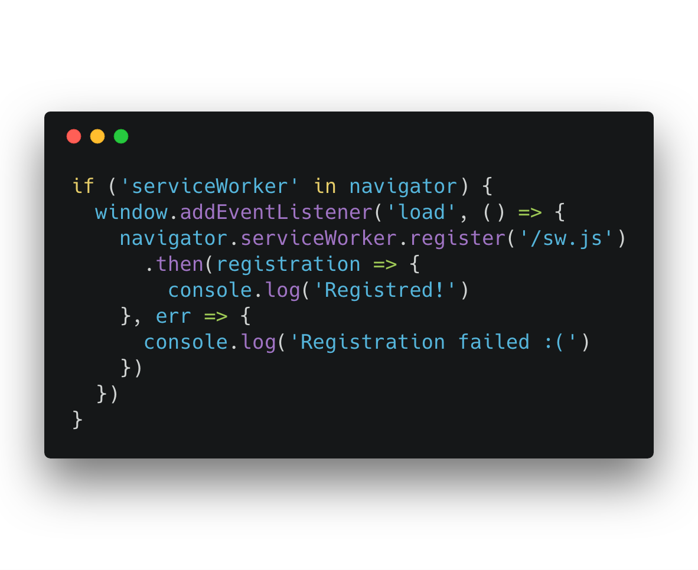
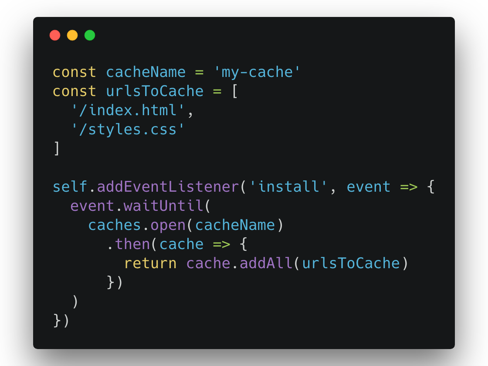
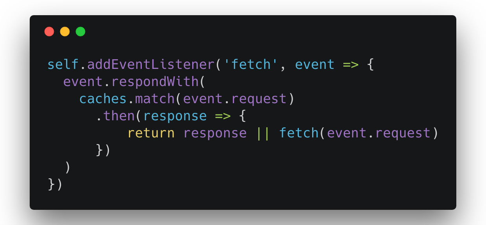
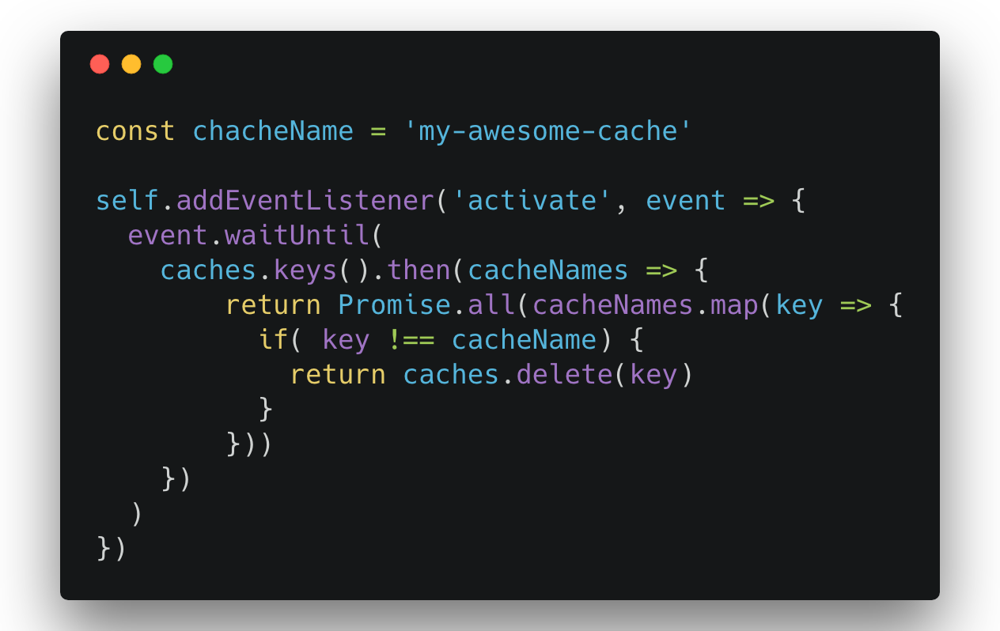
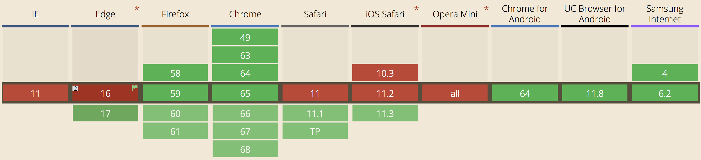
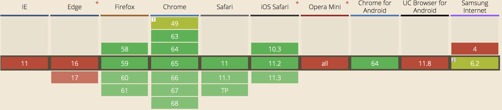
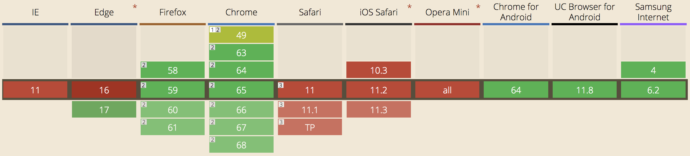
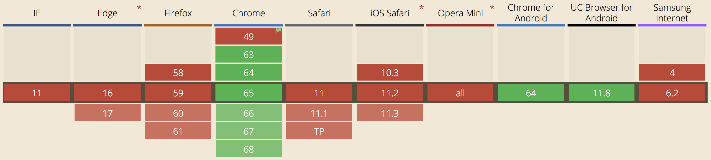

Wide reach + Engagement = PWA <3
PWA...
- Works offline
- Is fast
- Behaves like a native app
- Is secure
Service Worker

Service worker...
- can't access DOM directly
- controls network requests
- is asyncronous by nature
- lives by it's own lyfecycle
Regiter => Install => Activate => Fetch
register()

Handle 'install' event

Handle 'fetch' event

Handle 'activate' event

 Web App Manifest
Web App Manifest


App Shell
Where should offline data be stored?
IndexedDB
// Here will be an image
What else can we use?
- Push notifications
- Web Payments
- Credential management
What about browser support?
Service Worker

Indexed DB 2.0

Push API

Credential Management API

Cloud Firestore

Why Firestore?
- Realtime updates
- Offline support
How is it structured?
 // Here will be an image with hierarchical database illustration
// Here will be an image with hierarchical database illustration
How to get started?
- Create a project in Firebase console
- Enable Firestore
 // Here I will show my example
// Here I will show steps (pieces of code) how to build it
// Here I will show my example
// Here I will show steps (pieces of code) how to build it
 Source: Progressive Web Apps: Great Experiences Everywhere
Source: Progressive Web Apps: Great Experiences Everywhere
 Source:
Progressive Web Apps: Great Experiences Everywhere
Source:
Progressive Web Apps: Great Experiences Everywhere